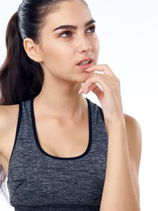

Загогловок статьи
Белки и аминокислоты в спортивном питании
Зачем мы идем в магазин спортивного питания?
Большинство спортсменов добиваются высоких результатов благодаря систематизации. Питание должно планироваться также тщательно, как планируются тренировки. Отсутствие планирования, в том числе и питания - потенциальный источник проблем.
Что бы избежать хаотичного выбора и решения, целесообразно посетить магазин спортивного питания или интернет спортивное питание предварительно определив какую проблему по организации спортивного питания необходимо решить.
Самым распространённым элементом спортивного питания являются белки.Рекомендуемая норма потребления белка для здоровых взрослых людей, ведущих малоподвижный образ жизни, составляет 0,8 г на кг массы тела в день.
Спортсменам для сохранения выносливости требуется больше белка. К факторам, влияющим на потребность в белке, относятся вид спорта (на выносливость или силовой), интенсивность нагрузки, содержание углеводов в рационе питания, уровень тренированности и количество потребляемых калорий.
Во время продолжительной нагрузки на выносливость организм расщепляет часть незаменимых (поступающих только с белком пищи) аминокислот с разветвленной цепью (лейцин, изолейцин и валин) для энергии. Скорость этого распада пропорциональна интенсивности нагрузки. Гормональные изменения, происходящие в организме во время продолжительной нагрузки - увеличение эпинефрина (адреналина) и норэпинефрина, и снижение инсулина - активизируют расщепление белка.
Однако сразу после продолжительной нагрузки синтез белка увеличивается и начинается восстановление поврежденных мышечных тканей. Спортсменам, тренирующимся на выносливость, требуется около 1,2-1,4 г белка на кг массы тела в день.
Во время силовых упражнений, таких как подъем штанги, основным источником энергии являются углеводы. Анаэробный характер силовой тренировки предохраняет мышцы от расходования аминокислот для энергии. Несмотря на это, "силовикам" все же требуется больше белка, чем спортсменам на выносливость. Этот дополнительный белок необходим им для поддержания высоких темпов мышечного роста. Силовым спортсменам требуется 1,6-1,7 г белка на кг массы тела в день.
Начинающим спортсменам требуется больше белка, чем тренированным. Этот дополнительный белок необходим спортсменам на выносливость для производства ферментов (белков) в мышцах, красных кровяных клеток - эритроцитов и миоглобина (переносчика кислорода в мышцах, схожего с гемоглобином).
Силовым спортсменам требуется дополнительный белок для развития мышечной массы, по мере того как их существующие мышечные ткани увеличиваются в размерах (гипертрофируются). Для того чтобы усилить анаболическое действие силовой тренировки, направленное на наращивание мышечной массы, следует непосредственно после нагрузки вместе с углеводами употребить небольшое количество белка (7 г).
Благодаря повышенному выбросу инсулина в ответ на комбинированное углеводно-белковое питание усиливается поглощение аминокислот мышцами и ускоряется синтез белка.
Потребление углеводов после продолжительной нагрузки на выносливость ускоряет восстановление мышечного гликогена в мышцах и печени, что необходимо для общего восстановления. Однако добавление небольшого количества белка (7 г) к углеводному питанию может также способствовать общему восстановлению организма за счет репарации (заживления) мышечных повреждений.
Когда в результате регулярных физических тренировок повышается энергоценность рациона, возрастает и потребление белка. Например, мужчина весом 70 кг, тренируясь, постепенно увеличивает калорийность рациона с 2500 до 3500 ккал в день. Потребление белка в этом случае возрастет с 90 до 130 г в день при условии, что 15% всех поступающих калорий приходится на белок.
Относительно веса тела дневное потребление белка для взрослого мужчины возрастет с 1,3 г до 1,8 г на кг массы тела в день, что более чем достаточно. Если со своим рационом вы получаете рекомендуемое количество белка (1,3-1,8 г на кг массы тела в день), то, вероятно, доля жира в вашем рационе превышает рекомендуемую норму, безопасную для здоровья сердечно-сосудистой системы.

Как правильно купить белковое спортивное питание?
Для спортивного питания наиболее предпочтительным является цельномолочный белок, который быстро усваивается организмом. Время усвоения цельномолочного белка составляет 3-4 часа. Концентрат сывороточного белка (whey protein concentrate)используется в спортивном питании чаще всего.
Его получение – сложный технологический процесс, включающий фильтрацию через керамические мембраны с чрезвычайно малыми отверстиями (ультрафильтрации), которые пропускают молекулы жиров и углеводов, но задерживают белок, который потом счищают с мембраны и высушивают при высокой температуре, превращая его в порошок.
Проблема заключается в том, что получить идеально одинаковые отверстия невозможно, поэтому на мембране задерживается масса, содержащая 40-90% белка. Качественным протеином считается порошок, содержащий 80% белка. При таком методе фильтрации, фракции белка не нарушаются, и он сохраняет все свои полезные свойства.
Бытует мнение, что чрезмерное употребление белка может нанести ущерб организму и, например, почкам. Это не так. Обилие белков в рационе не причинит вреда. Более того, диета с повышенным содержанием белка способствует поддержанию здоровья, а также снижению вероятности повышенного артериального давления.
Следует помнить о вредных «балластных» насыщенных жирах и холестерине, не имеющими ничего общего с белком, кроме их содержания в продуктах, часто употребляемых в качестве источников белка - например, жирное мясо, жирные молочные продукты, желтки яиц.
Что выбирать в магазине спортивного питания?
Рациональным решением проблемы пополнения рациона спортивного питания белком, адекватного виду спорта и тренировочной программе, в том числе когда используется спортивное питание для бодибилдинга, является включение в повседневный рацион белковых коктейлей в течении всего дня.
Белковый коктейль «Нормопротеин» на основе высококачественного 80% концентрата сывороточного молочного белка при 4-х разовом приеме (дробное потребление белка делает процесс его усвоения и использования в организме более физиологичным и «долгоиграющим»), не содержащий жира, удовлетворит до 30-50% потребности в белке в зависимости от тренировочной программы.
Можно легко «конструировать» свой рацион при спортивном питании для бодибилдинга, принимая высокоуглеводные продукты, избегая потребления жира и используя двойные порции «Нормопротеина» - таким образом можно обеспечить себя необходимой энергией и белком на 60-100% и богатой гаммой вкусовых предпочтений - вишни, апельсина, мандарина, банана, клубники, персика, кокоса, шоколада, ванили.